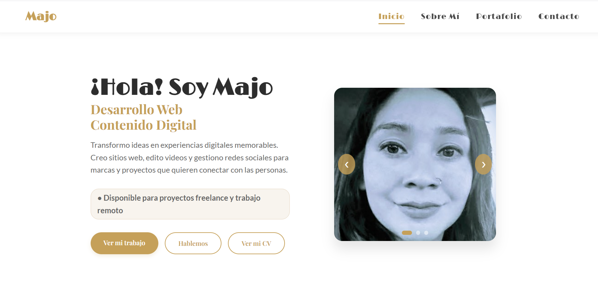
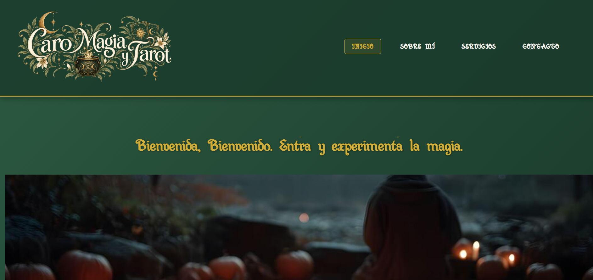

Portfolio Personal
Sitio multipágina desarrollado desde cero con HTML, CSS y JavaScript. Diseño responsive, carrusel accesible y optimización para GitHub Pages.
Ver sitio →Una selección de trabajos reales de desarrollo web, contenido digital y redes sociales. Cada proyecto representa un desafío y una solución concreta.

Sitio multipágina desarrollado desde cero con HTML, CSS y JavaScript. Diseño responsive, carrusel accesible y optimización para GitHub Pages.
Ver sitio →
Edición y postproducción de contenido audiovisual para redes sociales: cortes, subtítulos, música y formato vertical optimizado para Reels/TikTok.
Ver proyecto →
Planificación de contenido, diseño de piezas gráficas y community management para marca/proyecto. Enfoque en engagement y coherencia visual.
Ver proyecto →
Sitio web para proyecto de magia y tarot. Diseño de estructura, secciones y contenido, con identidad visual propia y dominio personalizado.
Ver sitio →Estoy disponible para proyectos freelance y oportunidades remotas.